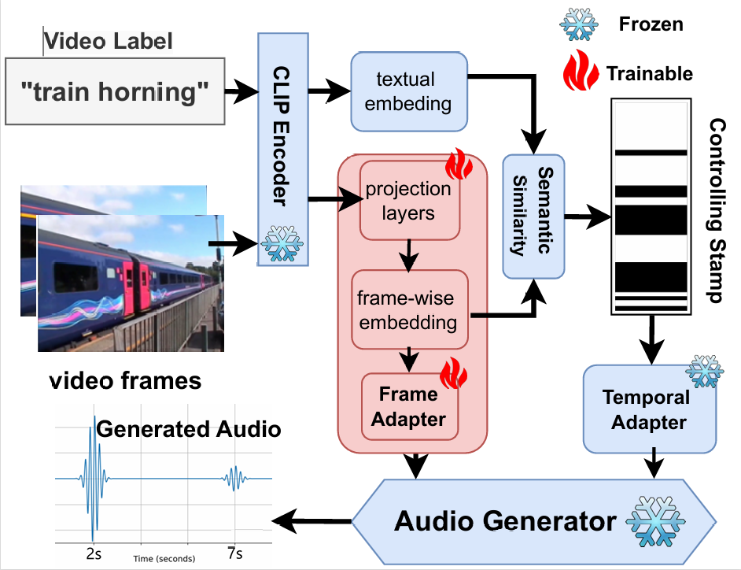

Authors: Yaoyun Zhang, Xuenan Xu, Mengxue Wu
Affiliations: MoE Key Lab of Artificial Intelligence, AI Institute, X-LANCE Lab, Department of Computer Science and Engineering, Shanghai Jiao Tong University
The video-to-audio (V2A) generation task has drawn attention in the field of multimedia due to its practicality in producing Foley sound. Semantic and temporal conditions are fed to the generation model to indicate sound events and temporal occurrence. Recent studies on synthesizing immersive and synchronized audio are faced with challenges on videos with moving visual presence. The temporal condition is not accurate enough, while low-resolution semantic condition exacerbates the problem. To tackle these challenges, we propose Smooth-Foley, a V2A generative model taking semantic guidance from the textual label across the generation to enhance both semantic and temporal alignment in audio. Two adapters are trained to leverage pre-trained text-to-audio generation models. A frame adapter integrates high-resolution frame-wise video features while a temporal adapter integrates temporal conditions obtained from similarities of visual frames and textual labels. The incorporation of semantic guidance from textual labels achieves precise audio-video alignment. We conduct extensive quantitative and qualitative experiments. Results show that Smooth-Foley performs better than existing models on both continuous sound scenarios and general scenarios. With semantic guidance, the audio generated by Smooth-Foley exhibits higher quality and better adherence to physical laws.
